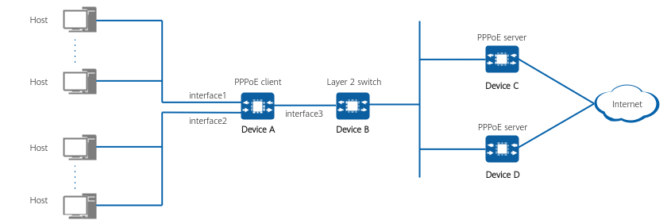

Example for Configuring the Device as an IPv4 PPPoE Client (Multiple Carrier Networks on One Link)
Networking Requirements
In Figure 1, Device A functioning as a PPPoE client connects to hosts on the LAN using interface1 and interface2, and connects to multiple PPPoE servers using interface3 through a Layer 2 switch.
The customer requires that some hosts access one carrier network and other hosts access the other carrier network. Each carrier provides an account and a service name. During connection setup, hosts use the accounts for which different service names are specified to connect to their respective PPPoE servers. The PPPoE servers then perform authentication for them. After the authentication succeeds, PPPoE sessions are established. In the scenario shown in the figure, two PPPoE sessions are established.
Service requirements are as follows:
- After CHAP or PAP authentication succeeds, Device A (PPPoE client) establishes a connection with Device C (PPPoE server).
- After CHAP or PAP authentication succeeds, Device A (PPPoE client) establishes a connection with Device D (PPPoE server).
- After a connection is disconnected, Device A attempts to re-establish a dial-up connection at intervals.

In the figure, interface1, interface2, and interface3 represent 10GE0/0/1, 10GE0/0/2, and 10GE0/0/3, respectively.

Configuration Roadmap
- Create a different dialer interface for each carrier network, and configure CHAP or PAP authentication on the dialer interfaces, so that the device can establish connections with the PPPoE servers through PPP authentication. (Information involved in CHAP authentication is provided by the carriers.)
- Bind the dialer interfaces to a physical interface, through which server-client connections are established. During the binding operation, specify the service names that identify carrier networks. After a connection is disconnected, the device attempts to re-establish a dial-up connection at intervals.
Procedure
- Configure PPPoE servers.
Configure the authentication mode and IP address allocation mode or IP addresses/address pools assignable to PPPoE clients on the PPPoE servers. The device cannot be configured as a PPPoE server. The PPPoE server configuration varies according to the device. For details, see the relevant documentation.
- Configure VPN instances for LAN users.
<HUAWEI> system-view [HUAWEI] sysname DeviceA [DeviceA] ip vpn-instance vpn1 [DeviceA-vpn-instance-vpn1] ipv4-family [DeviceA-vpn-instance-vpn1] quit [DeviceA] ip vpn-instance vpn2 [DeviceA-vpn-instance-vpn2] ipv4-family [DeviceA-vpn-instance-vpn2] quit [DeviceA] interface 10GE 0/0/1 [DeviceA-10GE0/0/1] ip binding vpn-instance vpn1 [DeviceA-10GE0/0/1] ip address 10.3.1.1 24 [DeviceA-10GE0/0/1] quit [DeviceA] interface 10GE 0/0/2 [DeviceA-10GE0/0/2] ip binding vpn-instance vpn2 [DeviceA-10GE0/0/2] ip address 10.3.2.1 24 [DeviceA-10GE0/0/2] quit
- Configure a dialer interface for connecting to one carrier network, configure the authentication mode of the interface, and enable generation of a default route.
If the authentication mode of the PPPoE server is CHAP, configure CHAP authentication on the interface. If the authentication mode of the PPPoE server is PAP, configure PAP authentication on the interface. If the authentication mode of the PPPoE server is unknown, configure both CHAP and PAP authentication on the interface. This example assumes that the authentication mode of the PPPoE server is unknown.
[DeviceA] interface dialer 1 [DeviceA-Dialer1] link-protocol ppp [DeviceA-Dialer1] ip binding vpn-instance vpn1 [DeviceA-Dialer1] ppp chap user user1@system [DeviceA-Dialer1] ppp chap password cipher YsHsjx_202206 [DeviceA-Dialer1] ppp pap local-user user1@system password cipher YsHsjx_202206 [DeviceA-Dialer1] ip address ppp-negotiate [DeviceA-Dialer1] ppp ipcp default-route [DeviceA-Dialer1] quit
- Configure a dialer interface for connecting to the other carrier network, configure the authentication mode of the interface, and enable generation of a default route.
If the authentication mode of the PPPoE server is CHAP, configure CHAP authentication on the interface. If the authentication mode of the PPPoE server is PAP, configure PAP authentication on the interface. If the authentication mode of the PPPoE server is unknown, configure both CHAP and PAP authentication on the interface. This example assumes that the authentication mode of the PPPoE server is unknown.
[DeviceA] interface dialer 2 [DeviceA-Dialer2] link-protocol ppp [DeviceA-Dialer2] ip binding vpn-instance vpn2 [DeviceA-Dialer2] ppp chap user user2@system [DeviceA-Dialer2] ppp chap password cipher YsHsjx_202207 [DeviceA-Dialer2] ppp pap local-user user2@system password cipher YsHsjx_202207 [DeviceA-Dialer2] ip address ppp-negotiate [DeviceA-Dialer2] ppp ipcp default-route [DeviceA-Dialer2] quit
- Bind the two configured dialer interfaces to the physical interface 10GE0/0/3 and establish PPPoE sessions. service-name specifies the service name provided by a carrier.
[DeviceA] interface 10GE 0/0/3 [DeviceA-10GE0/0/3] pppoe-client dialer 1 bundle-number 1 service-name server_device_c [DeviceA-10GE0/0/3] pppoe-client dialer 2 bundle-number 2 service-name server_device_d [DeviceA-10GE0/0/3] quit
- Configure NAT on the device to translate LAN users' private IP addresses into public IP addresses.
[DeviceA] interface dialer 1 [DeviceA-Dialer1] nat enable [DeviceA-Dialer1] quit [DeviceA] interface dialer 2 [DeviceA-Dialer2] nat enable [DeviceA-Dialer2] quit [DeviceA] nat-policy [DeviceA-policy-nat] rule name sourcenat1 [DeviceA-policy-nat-rule-sourcenat1] source-address 10.3.1.1 24 [DeviceA-policy-nat-rule-sourcenat1] action source-nat easy-ip [DeviceA-policy-nat-rule-sourcenat1] quit [DeviceA-policy-nat] rule name sourcenat2 [DeviceA-policy-nat-rule-sourcenat2] source-address 10.3.2.1 24 [DeviceA-policy-nat-rule-sourcenat2] action source-nat easy-ip
- Configure static routes destined for PPPoE servers.
[DeviceA] ip route-static vpn-instance vpn1 0.0.0.0 0 dialer 1 [DeviceA] ip route-static vpn-instance vpn2 0.0.0.0 0 dialer 2 [DeviceA] quit
Verifying the Configuration
# Run the display pppoe-client session summary command to check PPPoE sessions and statistics on the PPPoE client. The command output shows that the session status is UP, indicating that the sessions are normal.
<DeviceA> display pppoe-client session summary ----------------------------------------------------------------------------------------- PPPoE Client Session(summary): ID Dialer Bundle Intf Client-MAC Server-MAC State AC-Name 1 1 1 10GE0/0/3 00e0-fc03-0201 00e0-fccd-0680 UP DUALFW_V500e0fc030203 2 2 2 10GE0/0/3 00e0-fc03-0201 00e0-fcaf-1e26 UP DUALFW_V500e0fc054177 --------------------------------------------------------------------------------
Configuration Scripts
DeviceA
#
sysname DeviceA
#
ip vpn-instance vpn1
ipv4-family
#
ip vpn-instance vpn2
ipv4-family
#
interface Dialer 1
link-protocol ppp
ip binding vpn-instance vpn1
ppp chap user user1@system
ppp chap password cipher $1d$OwseVRh@LH}ZeTBm$1nH4$ab>d(N{-%0!ab48y=Ic*xEUR4pVhR2"9-~,$
ppp pap local-user user1@system password cipher $1d$OwseVRh@LH}ZeTBm$1nH4$ab>d(N{-%0!ab48y=Ic*xEUR4pVhR2"9-~,$
ip address ppp-negotiate
ppp ipcp default-route
nat enable
#
interface Dialer2
link-protocol ppp
ip binding vpn-instance vpn2
ppp chap user user2@system
ppp chap password cipher %+%##!!!!!!!!!"!!!!'!!!!*!!!!7LTnVOK_g:QDY;/\dKZOyPz%#cW@"O6Z$
ppp pap local-user user2@system password cipher %+%##!!!!!!!!!"!!!!'!!!!*!!!!7LTnVOK_g:QDY;/\dKZOyPz%#cW@"O6Z$
ip address ppp-negotiate
ppp ipcp default-route
nat enable
#
interface 10GE0/0/1
ip binding vpn-instance vpn1
ip address 10.3.1.1 255.255.255.0
#
interface 10GE0/0/2
ip binding vpn-instance vpn2
ip address 10.3.2.1 255.255.255.0
#
interface 10GE0/0/3
pppoe-client dialer 1 bundle-number 1 service-name server_device_c
pppoe-client dialer 2 bundle-number 2 service-name server_device_d
#
nat-policy
rule name sourcenat1
source-address 10.3.1.1 24
action source-nat easy-ip
rule name sourcenat2
source-address 10.3.2.1 24
action source-nat easy-ip
#
ip route-static vpn-instance vpn1 0.0.0.0 0 dialer 1
ip route-static vpn-instance vpn2 0.0.0.0 0 dialer 2
#
return